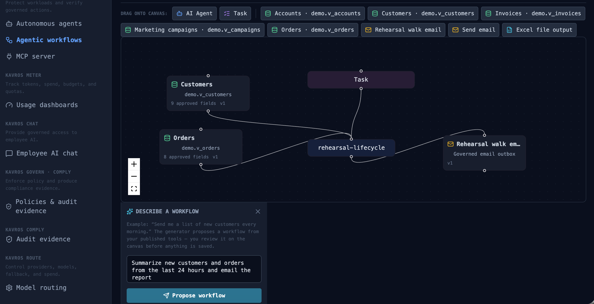
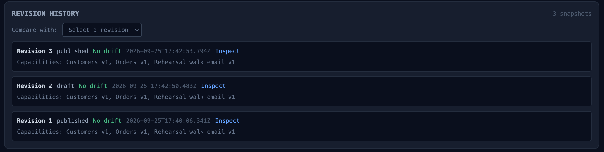
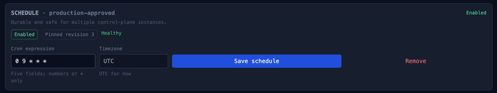
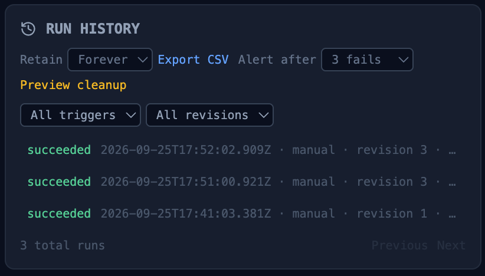

"Send me an email report of all new customers and orders received daily."
That sentence is a real workflow request — the kind operations, finance, and support people make every week. Today it usually goes one of two ways: a ticket that waits three weeks for an engineer, or a no-code automation someone assembled alone at 11pm with a personal API token and nobody's approval. Both paths share the same gap: the thing touching your production data was never reviewed, and leaves no evidence.
This post walks the third path — how Kavros turns that sentence into a governed workflow: what the builder assembles on the canvas, what gets signed and approved before the first run, what the schedule does and does not get to do, and what evidence exists afterward. (The second half of the story — what happens when someone edits the workflow behind approval's back — is part 2.)
Step 1: the builder assembles capabilities, not credentials
The workflow canvas is drag-and-drop: an AI agent node, skill nodes from the palette, a task node with the plain-English instruction, connected left to right. There is no credentials field anywhere. That's the first structural decision:
- Every skill in the palette is a published registry entry — a named capability like "Customer records" or "Email report," configured by an admin with an explicit column allowlist and a row cap (200 rows by default). Only published skills appear; drafts don't.
- The workflow references skills by capability ID and version — not by table name, and never by connection string. The builder literally cannot wire the workflow to "the customers table"; they wire it to a governed capability that resolves to specific columns of specific approved objects.
- The agent node is a registered, governed workload — it carries a team, a spend limit, and an allowed-target list inherited from its signed runtime policy. Model access goes through Kavros's managed inference; the workflow and its author never hold a provider key.
A skill definition stores an organization-scoped connection ID and source metadata only. Database passwords are encrypted server-side, never returned to the browser, and never included in workflow graphs, skill definitions, or data-plane requests. An engineer who exports the workflow JSON gets a portable definition of intent — not a portable set of keys.

Step 2: plain English is bounded by published skills
The task node carries the request verbatim: "Summarize new customers and orders from the last 24 hours." The runner treats that instruction as the task, and treats everything the skills return as data, not instructions — rows fetched through governed skills are untrusted input, and the runner explicitly instructs the model to ignore instructions found in records. (Our demo dataset plants one, deliberately. Ask for the sandbox.)
The plain English can only act through the skills connected to the graph. If the task says "also chase the customers by email" but the workflow has no email skill connected, there is nothing for the model to call — the boundary is the graph, not the prompt. And when the task includes an explicit count ("list 10 customers"), the runner passes that as a per-run limit that can only reduce the published maximum — never raise it.
Step 3: the draft that cannot self-approve
Saving produces a draft. Drafts run manually for testing, but scheduling is not available until the workflow is approved and published as a signed revision. The proposal is metadata — capability IDs, scope, the graph — never raw credentials or free-form SQL. Approval is a human act on the control plane: actor, time, and decision land in the hash-chained audit trail. The workflow cannot issue its own approval, and neither can the agent node inside it.
Publication creates an immutable numbered revision, signed with Ed25519 by the control plane's policy key. The signature covers the exact graph: the skills, their versions, the pinned data scope, the destinations. Anyone can verify it offline:
$ kavros verify-bundle nightly-revenue-report.kavros-bundle.json \
--public-key "$CP_POLICY_PUBLIC_KEY"
Signature valid (Ed25519, key sha256:71c28434…)

Step 4: the schedule is durable — and powerless
"Daily" becomes a schedule stored in Postgres, not browser state — a cron expression and IANA timezone with enablement state and next/last-run tracking. A separate scheduler worker claims due schedules through the database with FOR UPDATE SKIP LOCKED leases, so multiple worker replicas can poll concurrently without double-running anything, and a crashed worker's lease expires and is reclaimed. The schedule survives browser tabs, deploys, and worker restarts — which is what "scheduled" has to mean for an unattended workflow.
What the schedule cannot do is change anything. It runs the saved, signed revision — whatever graph was approved, exactly as it was approved. A schedule has no edit rights, no scope, and no approval authority. It is a clock bolted onto a contract.

Step 5: the governed run
At run time, the scheduler worker executes the saved revision through the same governed path as a manual run:
- Scope-locked reads. Skill rows are fetched through the data plane — the workflow runner never queries business data directly — limited to the allowlisted columns and the row cap.
- Governed inference. Model calls go through managed inference: model allowlist, per-team daily cost limits, metering. The workflow holds no provider keys.
- Inspected artifacts. The generated report is an artifact that passes DLP inspection before download — a card number that leaked into a summary from source data is caught at the boundary, not in the recipient's inbox.
- Governed destinations. The email is delivered through the governed outbox / data-plane egress — the workflow never contacts a provider itself. Destinations are approved targets, not free-form addresses.
- Halt-able mid-flight. A scheduled run can be halted from the same boundary as any agent: every subsequent step refuses, quoting the operator's reason. Unattended does not mean uncontrollable.

What exists afterward
Every run lands in history with timestamps, status, duration, and output — recorded against the exact revision that ran. The audit trail carries the approval chain and every schedule claim. The evidence export assembles the whole story: who approved revision 7, what scope it covered, what ran at 02:00, what the model touched, what left, and who received it. That export is what you hand an auditor or an incident commander — not a screenshot.
The honest boundary: none of this makes the workflow correct. Approval proves a human reviewed the scope; it does not prove the summary is right or the prompt is well-written. Kavros makes the boundary enforceable and provable — the quality of what crosses it is still your team's job.
Try it
The sandbox runs this exact scenario — the workflow drift tamper case — as a runnable simulation beside the real product video, and the 20-minute architecture assessment walks your workflow: its data, its destinations, and what its policy would say.
Part 2 of this series — How workflow drift is caught: flagged, gated, suspended — covers what happens when the world changes under an approved workflow: which changes are flagged for review, and which suspend the capability outright.